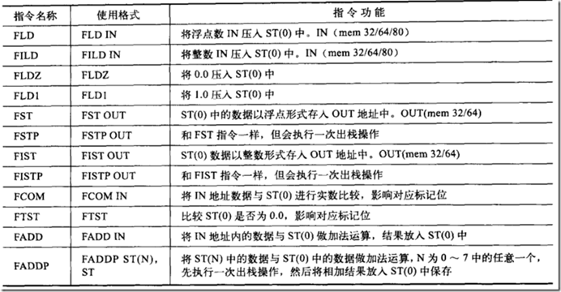
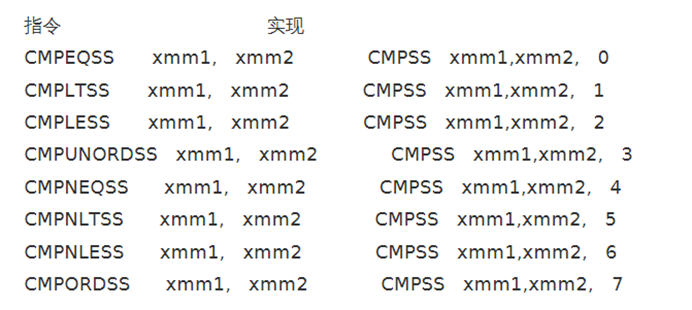
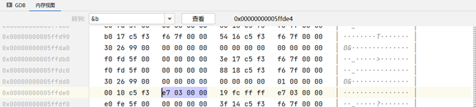
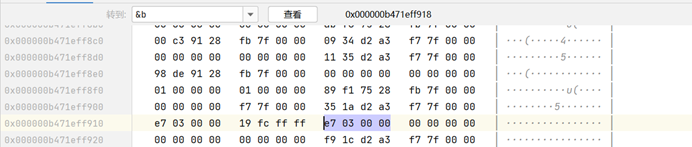
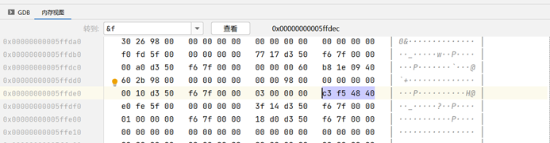
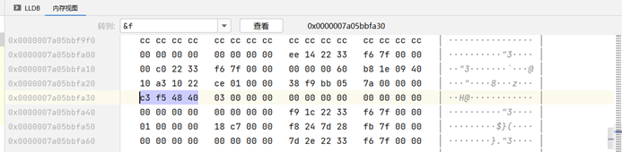
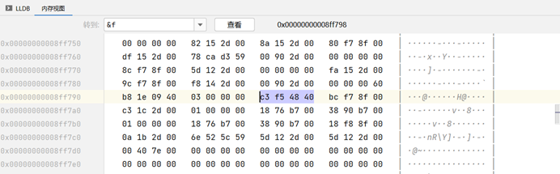

环境说明
CLion 2023.2 / MinGW（自带）/ Windows / MSVC（官方版）
基本数据类型
整型数据类型
注意各编译器下类型所占的大小：vs2019 中 long 占 4 字节，short 占 2 字节，long long 占 8 字节。
无符号整型
具体取值范围查阅 C Primer Plus 有详细说明。
unsigned int 在内存中占 4 字节（8 个十六进制字符表示），所有位均用于表示数值，MSB（最高位）无符号含义。
有符号整型
符号位为最高位，0 表示正数，1 表示负数。
负数在内存中以补码形式存储：取反后 +1。详见调试器中的具体信息。
浮点数据类型
Float 占 4 字节，double 占 8 字节。强转时 float 转 int 直接去掉小数部分，int 转 float 时结果不可控。
浮点数的编码方式
Float 的 IEEE 编码：Float 前 8 位记录科学计数法的指数部分，剩余 23 位记录科学计数法的尾数部分。
Double 的 IEEE 编码：与 float 格式一致，但比 float 空间更大，能表示的范围也越大。
浮点数指令
旧 CPU 使用 ST 指令（FPU）。

现在使用的是 SSE2 指令集。
参考：SSE2 指令集系列之一 — 浮点运算指令_16字节浮点数运算指令-CSDN博客

C 代码演示
Int 类型
#include <stdio.h>
int main(){
int a = 999;
int c = -999;
unsigned int b = 999;
printf("%d\r\n", sizeof(int));
printf("%d", sizeof(unsigned int));
return 0;
}MinGW 环境

A 值为 e7 03 00 00（> 999 = 0x3e7）
B 值为 23 01 00 00（> 0x123）
C 值为 19 fc ff ff（> -999）
存储方式为小端序。
MSVC 环境

A 值为 e7 03 00 00（> 999 = 0x3e7）
B 值为 23 01 00 00（> 0x123）
C 值为 19 fc ff ff（> -999）
存储方式同样为小端序。
Float 类型
#include <stdio.h>
int main(){
float f = 3.14f;
printf("%f\r\n", f);
int argc = (int)f;
printf("%d\r\n", argc);
return 0;
}x64 MinGW 汇编

main:
push %rbp
mov %rsp,%rbp
sub $0x30,%rsp
call __main
movss 0x88c6(%rip),%xmm0 ; 加载 3.14f 常量
movss %xmm0,-0x4(%rbp) ; f = 3.14f
pxor %xmm0,%xmm0
cvtss2sd -0x4(%rbp),%xmm0 ; f 转为 double 传参
movq %xmm0,%rax
mov %rax,%rdx ; 参数 2
lea 0x8891(%rip),%rax ; 参数 1 "%f\r\n"
mov %rax,%rcx
call printf
movss -0x4(%rbp),%xmm0
cvttss2si %xmm0,%eax ; eax = (int)f （截断转换）
mov %eax,-0x8(%rbp) ; argc = (int)f 入栈
mov -0x8(%rbp),%eax ; 参数 2 argc
mov %eax,%edx
lea 0x8876(%rip),%rax ; 参数 1 "%d\r\n"
mov %rax,%rcx
call printf
mov $0x0,%eax
add $0x30,%rsp
pop %rbp
retMSVC x64 汇编

main(...):
pushq %rdi
subq $0x30, %rsp
movss 0x8742(%rip), %xmm0
movss %xmm0, 0x20(%rsp) ; f = 3.14f
cvtss2sd 0x20(%rsp), %xmm0
movaps %xmm0, %xmm1
movq %xmm1, %rdx ; 参数 2
leaq 0xab17(%rip), %rcx ; 参数 1
callq printf
cvttss2si 0x20(%rsp), %eax ; argc = (int)f
movl %eax, 0x24(%rsp)
movl 0x24(%rsp), %edx ; 参数 2
leaq 0xab05(%rip), %rcx ; 参数 1
callq printf
xorl %eax, %eax
addq $0x30, %rsp
popq %rdi
retqMSVC x86 汇编

main(...):
pushl %ebp
movl %esp, %ebp
subl $0x8, %esp
movl $0xcccccccc, -0x8(%ebp) ; imm = 0xCCCCCCCC
movl $0xcccccccc, -0x4(%ebp) ; imm = 0xCCCCCCCC
movss 0x2d6b30, %xmm0 ; xmm0 = mem[0],zero,zero,zero
movss %xmm0, -0x4(%ebp) ; f = 3.14f
cvtss2sd -0x4(%ebp), %xmm0
subl $0x8, %esp
movsd %xmm0, (%esp) ; 参数 2
pushl $0x2d9000 ; 参数 1
calll _printf
addl $0xc, %esp
cvttss2si -0x4(%ebp), %eax ; argc = (int)f
movl %eax, -0x8(%ebp)
movl -0x8(%ebp), %ecx
pushl %ecx ; 参数 2
pushl $0x2d9008 ; 参数 1
calll _printf
addl $0x8, %esp
xorl %eax, %eax
addl $0x8, %esp
cmpl %esp, %ebp ; 检查栈是否平衡
calll __RTC_CheckEsp
movl %ebp, %esp
popl %ebp
retlC++ 代码演示
x64 MinGW (C++) — int
main():
push %rbp
mov %rsp,%rbp
sub $0x30,%rsp
call __main
movl $0x3e7,-0x4(%rbp) ; a = 999 (0x3e7)
movl $0xfffffc19,-0x8(%rbp) ; c = -999 (0xfffffc19)
movl $0x3e7,-0xc(%rbp) ; b = 999
mov -0x4(%rbp),%eax
mov %eax,%edx
mov 0x2be2(%rip),%rax ; std::cout
mov %rax,%rcx
call std::basic_ostream::operator<<(int)
mov $0x0,%eax
add $0x30,%rsp
pop %rbp
retx64 MinGW (C++) — float
main():
push %rbp
mov %rsp,%rbp
sub $0x30,%rsp
call __main
movss 0x8917(%rip),%xmm0 ; 加载 3.14f
movss %xmm0,-0x4(%rbp) ; f = 3.14f
pxor %xmm0,%xmm0
cvtss2sd -0x4(%rbp),%xmm0
movq %xmm0,%rax
mov %rax,%rdx
lea 0x88e2(%rip),%rax ; "%f\r\n"
mov %rax,%rcx
call printf
movss -0x4(%rbp),%xmm0
cvttss2si %xmm0,%eax ; argc = (int)f
mov %eax,-0x8(%rbp)
mov -0x8(%rbp),%eax
mov %eax,%edx
lea 0x88c7(%rip),%rax ; "%d\r\n"
mov %rax,%rcx
call printf
mov $0x0,%eax
add $0x30,%rsp
pop %rbp
retx64 MSVC (C++)
main():
pushq %rdi
subq $0x30, %rsp
movss 0x8766(%rip), %xmm0
movss %xmm0, 0x20(%rsp) ; f = 3.14f
cvtss2sd 0x20(%rsp), %xmm0
movaps %xmm0, %xmm1
movq %xmm1, %rdx
leaq 0x86c7(%rip), %rcx
callq printf
cvttss2si 0x20(%rsp), %eax ; argc = (int)f
movl %eax, 0x24(%rsp)
movl 0x24(%rsp), %edx
leaq 0x86b5(%rip), %rcx
callq printf
xorl %eax, %eax
addq $0x30, %rsp
popq %rdi
retqx86 MSVC (C++)
main():
pushq %rdi
subq $0x30, %rsp
movss 0x8766(%rip), %xmm0
movss %xmm0, 0x20(%rsp) ; f = 3.14f
cvtss2sd 0x20(%rsp), %xmm0
movaps %xmm0, %xmm1
movq %xmm1, %rdx
leaq 0x86c7(%rip), %rcx
callq printf
cvttss2si 0x20(%rsp), %eax ; argc = (int)f
movl %eax, 0x24(%rsp)
movl 0x24(%rsp), %edx
leaq 0x86b5(%rip), %rcx
callq printf
xorl %eax, %eax
addq $0x30, %rsp
popq %rdi
retq函数返回值为浮点数
#include <stdio.h>
float getfloat(){
return 12.25f;
}
int main(){
float f = getfloat();
return 0;
}MinGW x64
main:
push %rbp
mov %rsp,%rbp
sub $0x30,%rsp
call __main
call getfloat
movd %xmm0,%eax ; 返回值从 xmm0 取出
mov %eax,-0x4(%rbp) ; f = 12.25f
mov $0x0,%eax
add $0x30,%rsp
pop %rbp
retMSVC x64
main(...):
pushq %rdi
subq $0x30, %rsp
callq getfloat
movss %xmm0, 0x20(%rsp) ; f = 12.25f (xmm0 返回值)
xorl %eax, %eax
addq $0x30, %rsp
popq %rdi
retqMSVC x86 (64→32)
main(...):
pushl %ebp
movl %esp, %ebp
pushl %ecx
movl $0xcccccccc, -0x4(%ebp) ; imm = 0xCCCCCCCC
calll _getfloat
fstps -0x4(%ebp) ; f = 12.25f (FPU 栈顶 → 内存)
xorl %eax, %eax
addl $0x4, %esp
cmpl %esp, %ebp ; 检查栈是否平衡
calll __RTC_CheckEsp
movl %ebp, %esp
popl %ebp
retl